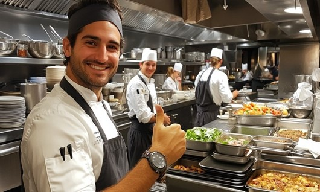

¿Cansado de trabajar sin contrato ni seguridad?
Sabemos lo que vives: largas jornadas, salarios bajos, miedo a accidentes, temor a que mañana te digan “ya no vuelvas”. Miles de trabajadores gastronómicos en Ica están pasando por lo mismo. Pero tu historia no tiene por qué quedarse así.

Transición a la Formalidad es el programa gratuito que te prepara, te orienta y te acompaña para que puedas buscar y acercarte a mejores oportunidades laborales formales.
Quiero más información